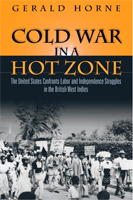

<body bgcolor="#FFFFFF" text="#000000" link="#0000FF" vlink="#CC0000" alink="#CC0000"><center><hr width="350" size="1" align="center" noshade>A fresh view of U.S involvement in the British West Indies during the Cold War<hr width="350" size="1" align="center" noshade><p><a href="https://cdcshoppingcart.uchicago.edu/Cart/ChicagoBook.aspx?ISBN=9781592136278&&PRESS=temple" target="_top">Buy this book!</a> | <a href="https://cdcshoppingcart.uchicago.edu/Cart/Cart.aspx?PRESS=temple" target="_top">View Cart</a> | <a href="https://cdcshoppingcart.uchicago.edu/Cart/Cart.aspx?PRESS=temple" target="_top">Check Out</a></p><p></p></center><!--none//--><h1>Cold War in a Hot Zone</h1>
<H2>The United States Confronts Labor and Independence Struggles in the British West Indies</H2>
<h3>Gerald Horne</h3>
<P>cloth 1592136273 $84.50, Jun 07, <FONT COLOR=#990033>Available</FONT>
<br>paper 1592136281 $30.95, Jun 07, <FONT COLOR=#990033>Available</FONT>
<br>Electronic Book 159213529X $30.95 <FONT COLOR=#990033>Available</FONT>
<BR> 272 pp
6x9
7&nbsp;halftones
</P><BLOCKQUOTE><I>"I regard this book as a major contribution to regional scholarship about the Caribbean, pointing toward a little-understood area of U.S. global policy and its effects."</i>
<br><b>&#151Paul Buhle</b>, Departments of History and American Civilization, Brown University</I></BLOCKQUOTE>
<p>
Beginning just before the start of World War II and ending during the Cold War, Gerald Horne's masterful examination of British Guiana and the British West Indies details the collapse of British colonial structures and the corresponding rise of U.S. regional influence. Horne reveals the realities of race and color in the Caribbean under colonial rule, while the colonizers-Britain, France, Germany, Japan, and the United States-battled each other for hegemony on the world stage.
<p>
Horne seamlessly weaves a variety of untapped archival sources-including personal correspondence and newspaper stories from three continents-with a wide range of scholarly publications, journals and memoirs to illustrate an important, yet underexamined, regional history in a global context.
<p>
Highlighting the centrality of the "labor question" in relation to colonial rule, <i>Cold War in a Hot Zone</i> is a compelling expos� of the racial dimensions of U.S. foreign policy and anti-communist initiatives during WWII and the Cold War that followed.
<BR>&nbsp;<h2>Excerpt</h2><P>Excerpt available at <a href="http://www.temple.edu/tempress">www.temple.edu/tempress</a></p>
<BR>&nbsp;<h2>Reviews</h2>
<p><i>"</i>Cold War in a Hot Zone<i> is a masterful examination of British Guiana and the region known historically as the British West Indies. Utilizing the voices of well-situated historical actors, Gerald Horne gives witness to the collapse of British colonial structures and the corresponding rise of U.S. regional influence. Strikingly, this book reveals the intense level and infusion of race and color under colonial rule, even as British, French, German, Japanese, and American colonial powers fought each other for hegemony. Horne paints a compelling expose of U.S. foreign policy and anti-communism, especially the racial dimensions associated with the Cold War, highlighting the centrality of the so-called labor question in relation to colonial rule, making a new and original contribution to the literature. Each chapter is compelling, yet the whole is greater than the sum of its parts."</i><br><b>&#151Joseph Wilson</b>, Professor of Political Science and Director of the Graduate Center for Worker Education, Brooklyn College
<p><i>"</i>Cold War in a Hot Zone<i> is extremely well researched and surprisingly lively�The author�s documentation of the racism on American military bases in the region is solid�he gives us many intriguing details."</i> <br>&#151;<b><i>Foreign Service Journal</i></b>
<p><i>"</i>Horne details a comprehensive history of the political and economic struggles of the islands and traces the collapse of British colonialism and the rise of U.S. influence in the Caribbean. Horne�s extraordinary expose, rich with historical data on the political parties, their leaders, and their federations, reads like an encyclopedia on �everything you would ever want to know� about these islands, and should serve as a main text for Caribbean history, politics, and economics of the region from the 1930s to the end of the Cold War."</i> <br>&#151;<b><i>Multicultural Review</i></b>
<p><i>"Horne offers his considerable talents to an examination of the independence struggle in the British West Indies�.Horne expertly shows how US policy makers used anticommunism to thwart the militant [Caribbean Labour Congress] and depose Jagan in the emerging Cold War. The chapters on Jamaica and Guiana, as well as the comparison of Guiana and Barbados, are excellent and a revelation�.This is well researched and well written. Summing Up: Highly recommended."</i> <br>&#151;<b><i>Choice</i></b>
<p><i>"The book stands out as one of the most revealing pieces of work ever to be articulated on the subject of labour and working-class struggles in the former British colonies in the Caribbean during the 1940s and 1950s period. Horne�s research was meticulous and comprehensive�. His analysis situates the issues within their contextual positioning and depictions, allowing for readers to learn and come away with a very comprehensive understanding of these important historical events of West Indian life."</i> <br>&#151;<b><i>Trinidad and Tobago Review</i></b>
<p><i>"The book stands out as one of the most revealing pieces of work ever to be articulated on the subject of labor and working-class struggles in the former British colonies in the Caribbean during the 1940s and 1950s. Horne�s research was meticulous and comprehensive.... His analysis situates the issues within their contextual positionings and depictions, allowing for readers to learn and come away with a very comprehensive understanding of these important historical events of West Indian life.... </i>Cold War in a Hot Zone<i> promises some surprises and thrills for those interested in a uniquely refreshing look at West Indian/Caribbean history."</i><br>&#151<b><i>Wadabagei </i></b>
<p><i>"The reader emerges with a vivid and detailed picture of the tumultuous period in British West Indian history and its global context.... </i>Cold War in a Hot Zone<i> is a lively and valuable contribution to the literature on the politics [of the] British West Indies during the mid-twentieth century." </i><br>&#151<b><i>The Journal of Latin American Studies</i></b>
<p><i>"Horne's major contribution is his discussion of the rise of successive generations of entrepreneurial labor leaders in several West Indian colonies from the 1930s to the 1950s."</i>
<br>&#151;<b><i>Estudios Interdisciplinarios de America Latina y el Caribe</i></b>
<BR>&nbsp;<h2>Contents</h2><P>
<P>Introduction
<p>Chapter 1
Early Organizing
<br>
Chapter 2
Big Islands/Big Problems<br>
Chapter 3
The Labor of War<br>
Chapter 4
When Labor Organizes
<br>
Chapter 5
Militant Jamaica
<br>
Chapter 6
Washington Confronts the West Indies
<br>
Chapter 7
Labor Will Rule?
<br>
Chapter 8
Cold War in a Hot Zone
<br>
Chapter9
The Left Retreats
<br>
Chapter 10
Small Islands/Huge Impact
<br>
Chapter 11
Militant British Guiana
<br>
Chapter 12
Barbados vs. British Guiana
<br>
Conclusion
<br>
Epilogue
</P><BR>&nbsp;<H2>About the Author(s)</H2>
<P><b>Gerald Horne</b> is Moores Professor of History and African-American Studies at the University of Houston.</P>
<BR><H2>Subject Categories</H2>
<p><A HREF="/tempress/latin.html" TARGET="_top">Latin American/Caribbean Studies</a>
<BR><A HREF="/tempress/labor.html" TARGET="_top">Labor Studies and Work</a>
<BR><A HREF="/tempress/african.html" TARGET="_top">African American Studies</a>
</p>
<p align="center"><a href="https://cdcshoppingcart.uchicago.edu/Cart/ChicagoBook.aspx?ISBN=9781592136278&&PRESS=temple" target="_top">Buy this book!</a> | <a href="https://cdcshoppingcart.uchicago.edu/Cart/Cart.aspx?PRESS=temple" target="_top">View Cart</a> | <a href="https://cdcshoppingcart.uchicago.edu/Cart/Cart.aspx?PRESS=temple" target="_top">Check Out</a></p><p><font face="Arial" size="1"><a href="copyright.html" onMouseOver="window.status='Web Copyright Policy';return true;" onMouseOut="window.status=''" title="Web Copyright Policy">&copy;</a> 2015 <a href="http://www.temple.edu" target="new" onMouseOver="window.status='Link to Temple University home page';return true;" onMouseOut="window.status=''" title="Link to Temple University home page">Temple University</a>. All Rights Reserved. http://www.temple.edu/tempress/titles/1907_reg.html</font></p>